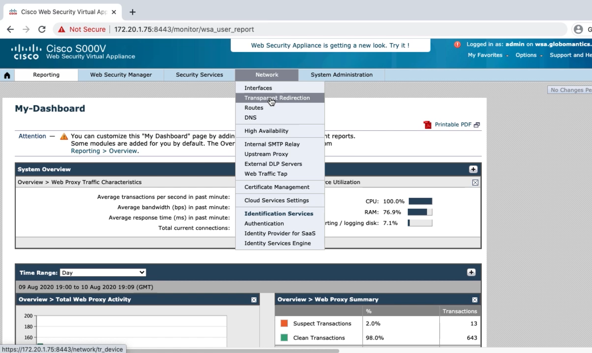
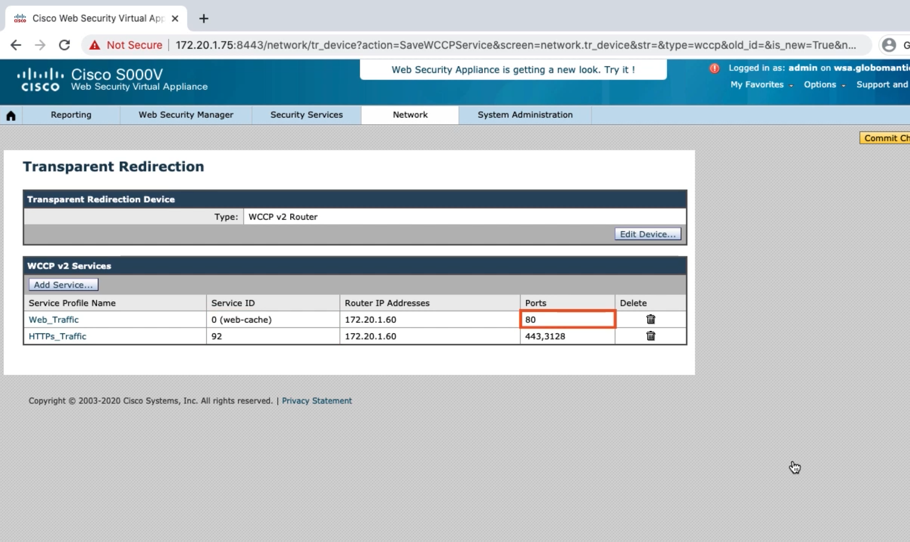

Configuring Traffic Redirection on the WSA¶
WCCP Overview¶
WCCP Versions and Service Groups¶
Version 1
HTTP only
Version 2
HTTPs, FTP, Encryption
Service Group 0
Web-Cache
Service Group 70
HTTPs
Service Groups 90-97
User Defined
Service Group 99
Reverse Proxy
Configuring WCCP on a WSA¶
Enable WCCP
Configure web traffic service group
Configure HTTPs service group


Configuring WCCP on a Cisco Switch¶
Enable WCCPv2
Define traffic to be redirected
Define WSA
Create WCCP service groups
Apply service groups to the VLAN
Globo-Access(config)#ip wccp version 2
Globo-Access(config)#ip wccp source-interface gi1/0/24
Globo-Access(config)#ip access-list extended HTTP
Globo-Access(config-ext-nacl)#permit tcp 192.168.18.0 0.0.0.255 any eq Www
Globo-Access(config-ext-nacl)#exit
Globo-Access(config)#ip access-list extended HTTPs
Globo-Access(config-ext-nacl)#permit tcp 192.168.18.0 0.0.0.255 any eq 443 Globo-Access(config-ext-nacl)#exit Globo-Access(config)#ip access-list standard WSA
Globo-Access(config-std-nacl)#permit 172.20.1.75
Globo-Access(config-std-nacl)#exit Globo-Access(config)#ip Wccp web-Cache redirect-list HTTP group-list WSA password GLobo
Globo-Access(config)#ip wccp 92 redirect-list HTTPs group-list WSA password Globo
Globo-Access(config)#int vlan 10
Globo-Access(config-if)#ip wccp web-cache redirect in
Globo-Access(config-if)#ip wccp 92 redirect in